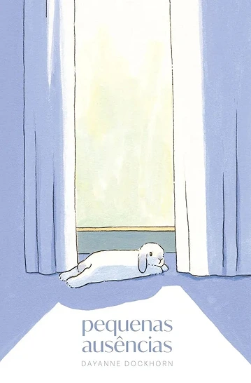
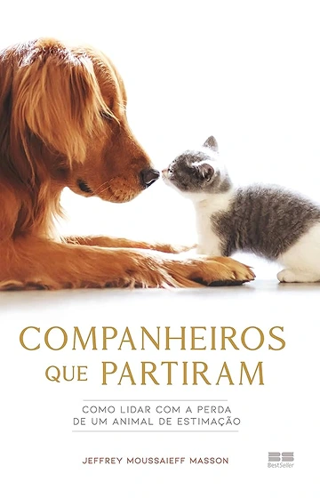
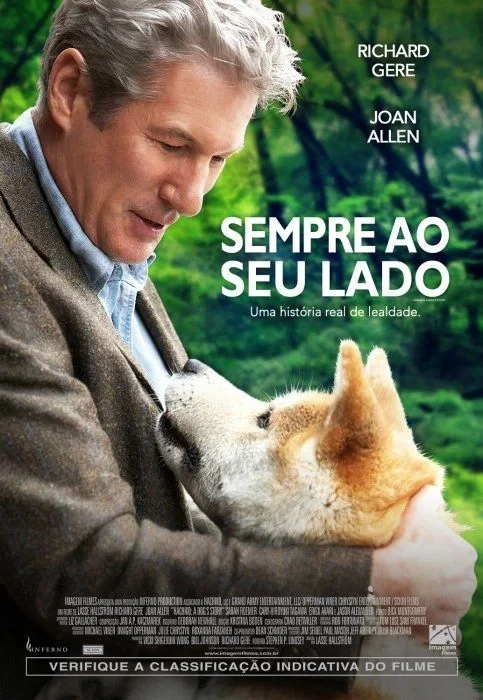

Suporte Emocional
A dor da perda de um animal de estimação é profunda, mas frequentemente minimizada pela sociedade. O vínculo com um pet é feito de amor puro e rotina; por isso, quando eles partem, o vazio é o de um membro da família. Enfrentar esse luto pode ser solitário, especialmente quando as pessoas ao redor não compreendem a gravidade dessa tristeza.
Se Você Está Passando por Isso
Saiba que existem caminhos para atravessar a dor:
- Valide o seu sofrimento: A sua dor é real e legítima. Chorar e sentir a falta do seu companheiro é a resposta natural ao tamanho do amor que vocês compartilharam. Não sinta culpa ou vergonha por ficar triste.
- Crie rituais de despedida: Homenagens ajudam a mente a processar o encerramento do ciclo. Escrever uma carta, guardar um objeto especial (como a coleira) ou plantar uma flor são formas de transformar a dor em memória.
- Busque apoio de quem entende: Converse com amigos, familiares ou comunidades que também amam animais e compreendem essa ligação. Evite desabafar com quem minimiza o seu sentimento.
- Respeite o seu tempo: A casa parecerá silenciosa por um período. Reorganize a rotina aos poucos, sem cobranças para "superar" rápido. Se a tristeza se tornar paralisante, o suporte de um psicólogo será um caminho fundamental.
Com o tempo, a ausência física deixará de ser uma ferida aberta e se transformará em uma saudade acolhedora, cheia de gratidão pelos anos de lealdade e alegria que o seu amigo trouxe para a sua vida.
Psicológico Animal
A saúde dos animais de estimação vai muito além da ausência de doenças físicas. Cães e gatos possuem uma vida emocional complexa e podem sofrer com ansiedade, estresse e depressão.
O bem-estar mental do pet depende diretamente da rotina, do ambiente e dos estímulos que ele recebe. Tutores atentos aos sinais emocionais conseguem prevenir problemas de comportamento e garantir uma vida equilibrada para o animal.
Veja Dicas Essenciais para Cuidar da Saúde Mental do Seu Pet
- Estimule o enriquecimento ambiental: Ambientes sem estímulos geram tédio e ansiedade. Use brinquedos interativos, comedouros lentos ou esconda petiscos para exercitar o faro e o raciocínio. Para gatos, invista em arranhadores, prateleiras e nichos altos.
- Mantenha uma rotina de atividades físicas: O gasto de energia acalma a mente. Passeios diários e brincadeiras ativas liberam hormônios de prazer e relaxamento, reduzindo comportamentos destrutivos (como roer móveis ou lamber as patas por estresse).
- Promova a socialização correta: Acostume o pet desde jovem a frequentar novos ambientes e a interagir com pessoas e outros animais. Esse contato deve ser gradual e respeitar o limite do bicho, evitando fobias e agressividade no futuro.
- Garanta momentos de descanso: Pets precisam de muitas horas de sono para recuperar as energias. Ofereça uma cama confortável em um local calmo da casa, longe de barulhos excessivos ou circulação intensa, onde ele possa relaxar sem ser incomodado.
- Cuidado com mudanças bruscas: Mudanças de casa, a chegada de um novo membro na família ou a perda de um companheiro abalam o psicológico do animal. Nessas transições, reforce o carinho, mantenha os horários da rotina e considere o uso de feromônios sintéticos.
A mente e o corpo dos animais funcionam juntos. Se notar alterações persistentes, como isolamento, falta de apetite ou lambedura compulsiva, consulte um médico veterinário ou especialista em comportamento animal para devolver o equilíbrio ao seu amigo.
Materiais Extras
Esses materiais podem ajudar aos tutores à enfrentarem esses momentos difíceis.
Indicações de Livros

Pequenas ausências - Dayanne Dockhorn
É um ensaio sensível em formato de cartas escritas após a morte repentina de sua coelha de estimação, a Floqui. Através desses relatos íntimos, a autora narra o vazio deixado na rotina e defende a profundidade do luto pelos animais de companhia, um sentimento muitas vezes silenciado pela sociedade.
O livro é um acolhimento para quem já perdeu um animal e uma validação de que o amor interespécies gera conexões profundas e lutos legítimos.

Companheiros que partiram - Jeffrey Moussaieff Masson
Aborda o luto pelos animais sob uma perspectiva que une a sensibilidade pessoal à observação científica. A obra foca na dor profunda e no vazio que os tutores enfrentam após a perda de seus cães e gatos.
O autor investiga a complexidade desse luto, questionando por que a perda de um animal muitas vezes dói tanto quanto (ou até mais do que) a de um ser humano. Masson valida a legitimidade desse sofrimento e critica a incompreensão da sociedade, que tende a minimizar esse sentimento.
É um livro de acolhimento e reflexão sobre a pureza do amor interespécies e a importância de respeitar o tempo de cura de quem se despede de um companheiro leal.
Indicações de Filmes
Quatro Vidas de Um Cachorro
Quatro Vidas de um Cachorro acompanha a jornada espiritual de um cão que reencarna diversas vezes. Embora viva com diferentes donos e em épocas distintas, ele mantém a esperança de reencontrar Ethan, o seu primeiro e grande amigo humano, enquanto tenta descobrir o verdadeiro propósito de sua existência.

Sempre ao seu lado
Parker Wilson (Richard Gere) é um professor universitário que, ao retornar do trabalho, encontra na estação de trem um filhote de cachorro da raça akita, conhecido por sua lealdade. Sem ter como deixá-lo na estação, Parker o leva para casa mesmo sabendo que Cate (Joan Allen), sua esposa, é contra a presença de um cachorro.
Aos poucos Parker se afeiçoa ao filhote, que tem o nome Hachi escrito na coleira, em japonês. Cate cede e aceita sua permanência. Hachi cresce e passa a acompanhar Parker até a estação de trem, retornando ao local no horário em que o professor está de volta. Até que um acontecimento inesperado altera sua vida.